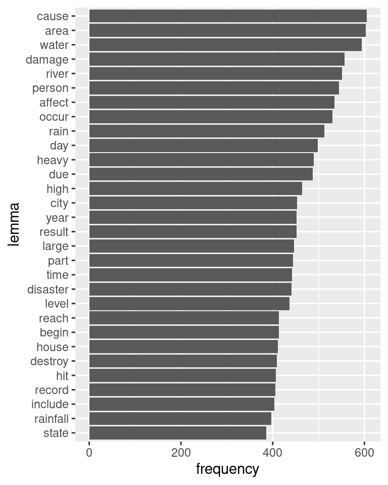

Code
library(tidyverse)
library(stm)
library(tidytext)
wd_raw=readRDS("data/wd_raw.RDS")
wp_words=readRDS("data/wp_words.RDS") %>%
filter(flood %in% wd_raw$flood)
# A tibble: 180 × 4
topic term beta rank
<int> <chr> <dbl> <int>
1 1 area 0.0149 1
2 1 rain 0.0146 2
3 1 cause 0.0145 3
4 1 heavy 0.0138 4
5 1 rainfall 0.0131 5
6 1 record 0.0129 6
7 1 water 0.0129 7
8 1 damage 0.0125 8
9 1 occur 0.0117 9
10 1 hour 0.0114 10
# ℹ 170 more rowsBuilding corpus...
Converting to Lower Case...
Removing punctuation...
Removing stopwords...
Removing numbers...
Stemming...
Creating Output... Removing 2396 of 8271 terms (2396 of 183240 tokens) due to frequency
Your corpus now has 712 documents, 5875 terms and 180844 tokens.Warning in left_join(., wm_full %>% select(flood, date, country_label), : Detected an unexpected many-to-many relationship between `x` and `y`.
ℹ Row 1 of `x` matches multiple rows in `y`.
ℹ Row 17402 of `y` matches multiple rows in `x`.
ℹ If a many-to-many relationship is expected, set `relationship =
"many-to-many"` to silence this warning.# A tibble: 6 × 4
lemma country_label spec n
<chr> <chr> <dbl> <int>
1 avert Austria Inf 1242
2 gauge Austria Inf 1457
3 manner Austria Inf 1242
4 ore Austria Inf 1377
5 vote Austria Inf 1242
6 accelerate Belgium Inf 1056